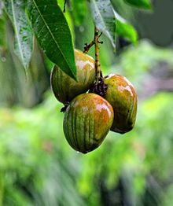
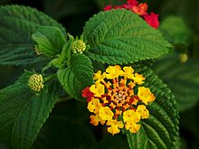
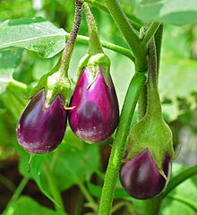

Fenugreek |
Mango |
Lantana |
Aubergine |
|
| Length of the seed | 4.01 to 4.19mm | 4 to 7cm | 3 to 4 mm | 1 to 3 mm |
|---|---|---|---|---|
| Family | Solanaceae | Verbenaceae | 3 to 4 mm | 1 to 3 mm |